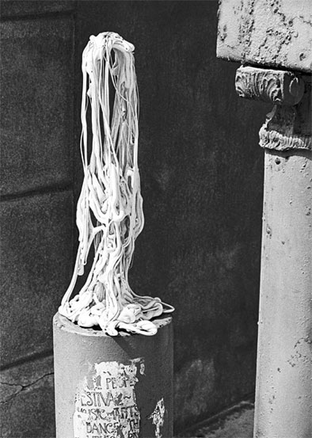

Lauren Cazden
The Waxhead
 |
| (1 of 8) |
 |
| (1 of 8) |
"The first time I picked up a 35mm camera and shot my first picture, I realized that with this mechanical device I could record a vision of the world I saw through my mind's eye. And what keeps me taking pictures is that the world I record never quite represents what I see. That's because there is always more to life than can be captured on film or digitally. Life is of the Spirit. Photography is man-made. This is the fascination and the mystery of photography. I am always in search of the perfect photograph to capture and explain this Spirit life we all live."I attended Northridge University and received my degree in anthropology. I guess that's why I have always been interested in people. Similarities and differences between human beings is the tapestry that adds color and richness to the world. Although I am a songwriter and poet, having written and published extensively, my great passion has always been and will always be photography--black and white and color, using film and digital cameras.
"I love black and white photography because color sometimes detracts from the truth of a situation. People can be dressed in diamonds and silk and glitter majestically when they walk. However, take the diamonds and silk away and you still have just simple humans aware of their mortality and searching for immortality.
"I love color photography because God gave us a rainbow-colored world to enjoy and uplift us. White light is, after all, merely a combination of all the rainbow colors. White light shined through a glass prism separates into all the rainbow colors of nature. Black is the absence of light. And so, sometimes I want to see the splendor of God's creation rather than the plain truth of it. It depends on my mood. I can work for weeks on a photograph, from start to finish, to try and achieve an emotional response inside of me when the image is finished.
"I am grateful to have the opportunity to photograph the world as I see it and in this small way be part of it."